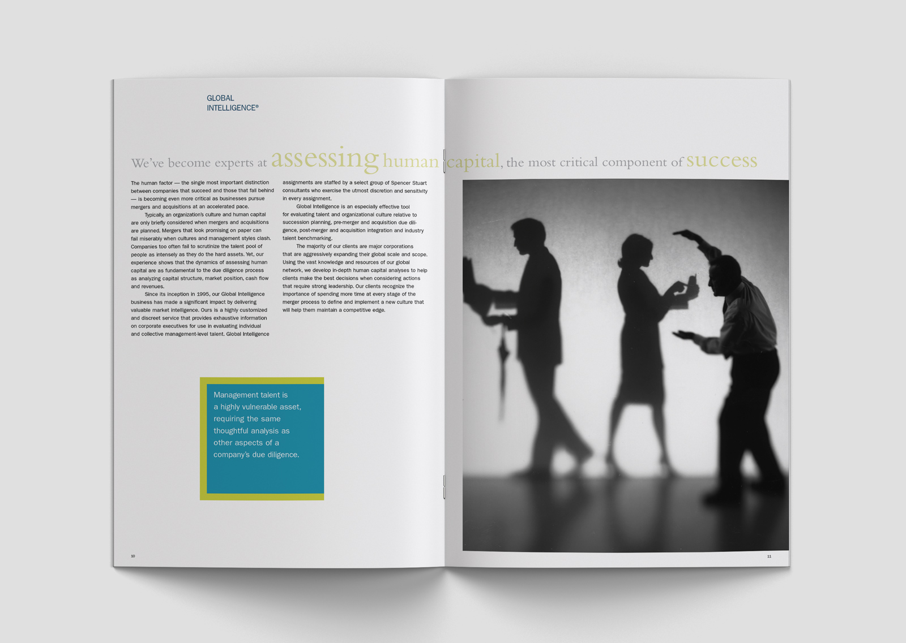
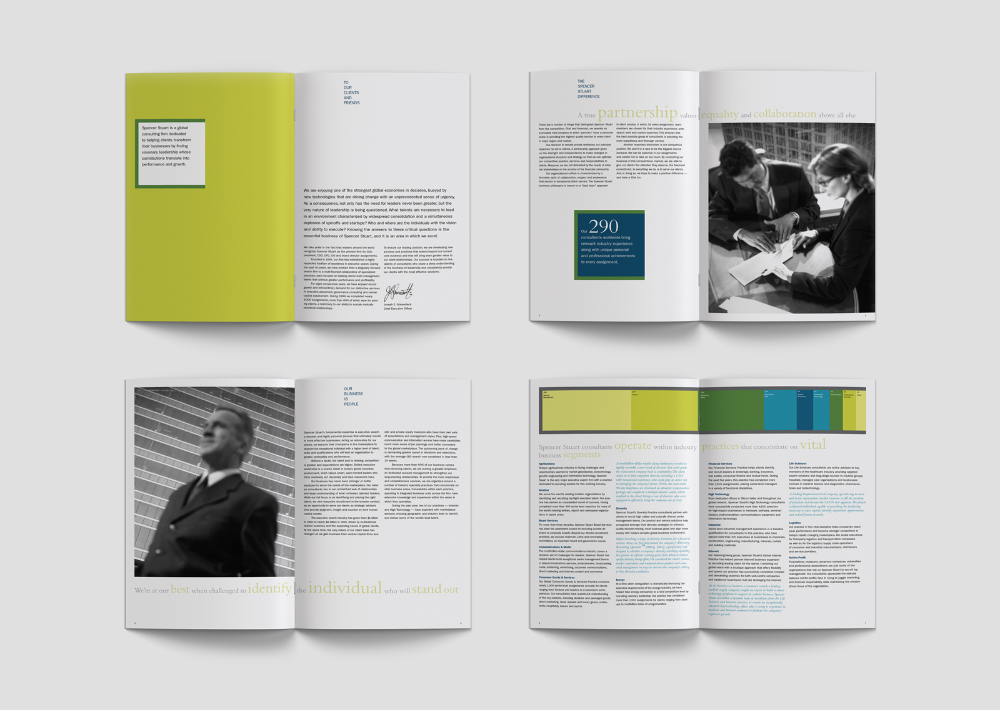
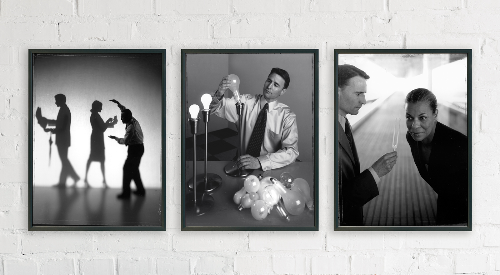

Spencer Stuart // Capabilities Brochure
Spencer Stuart is an international executive recruitment firm. This brochure was created to communicate the client’s strengths in finding corporate leaders with unique qualities and qualifications. Unconventional photography hints at the client’s risk-taking culture, while the classic layout and typography reinforce the firm’s stringent standards and professionalism.
Discipline
/ Print
Role
/ Concept, art direction, design, production, project management
Credits
/ Produced at Deborah Schneider Design
/ Photography, Tom Maday
/ Styling, Bill Zbarren



